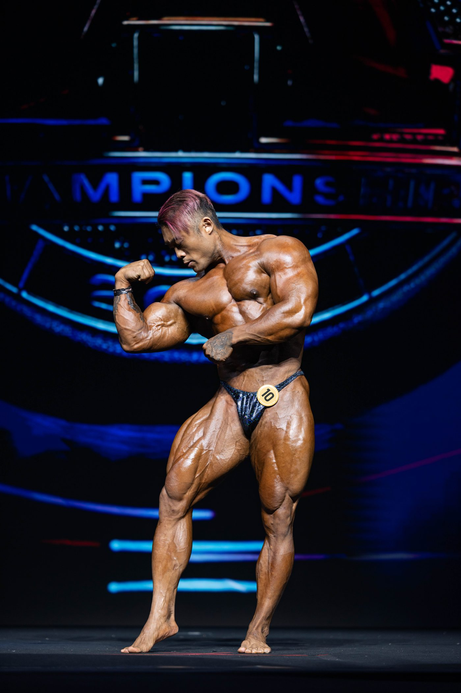
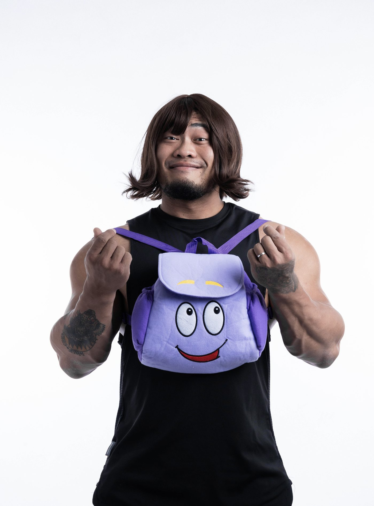

01我的故事
我的健身史
大學時期－「健美之路的啟蒙」
初次和朋友踏入健身房後，便被深深吸引。逐漸對「健美」產生濃厚興趣。
－－－－－－－－－－－－－－－－－－－－－－－
參與各項「賽事」－對自我的肯定
自2015年開始，屢次於比賽取得佳績。並於2018年，於韓國取得「IFBB PRO LEAGUE」的職業資格，成為「台灣第一位」古典健體職業選手。首次參賽即獲得職業卡，更斬獲了「台灣腿王」稱號。這次的殊榮更是給了我一劑強心針，除了榮譽感外，也奠定了我未來的道路。
－－－－－－－－－－－－－－－－－－－－－－－
各項賽事的「榮譽勳章」如下：
2019年 韓國職業賽
2022年 Thailand PRO 212項目 第三名
受邀參賽Arnold classic
2024年 成為「台灣首位」以傳統健美212項目取得
【取得2025年 Mr.Olympia參賽資格】
2025年 Mr.Olympia 傳統健美212項目
Asian Championship 傳統健美212項目冠軍
【取得2026年 Mr.Olympia參賽資格】
【臺灣首位以傳統健美212項目 登上Mr.Olympia舞台，
並連續兩年取得Mr.Olympia參賽資格】

